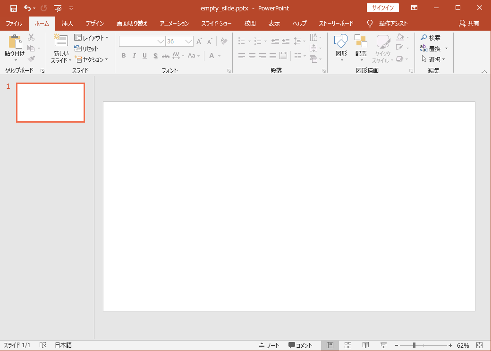
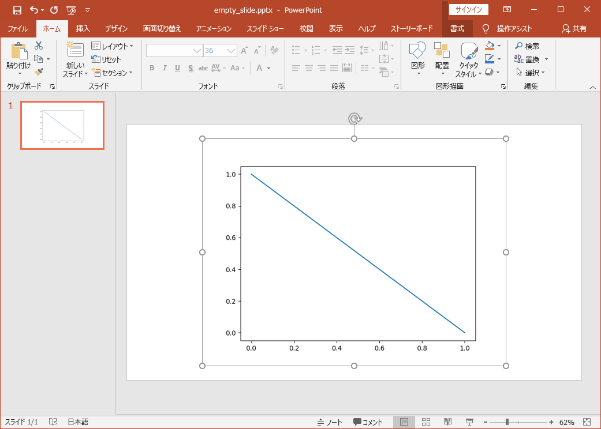
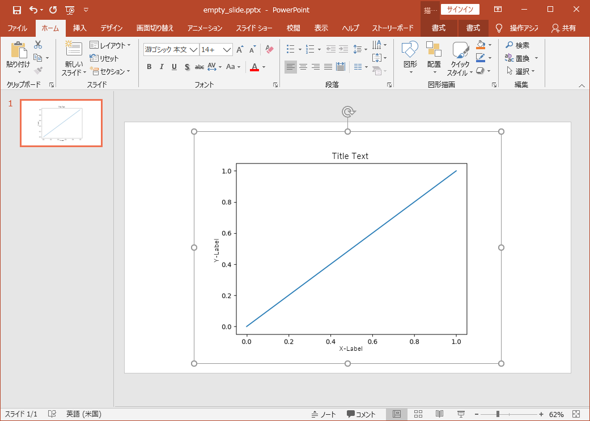
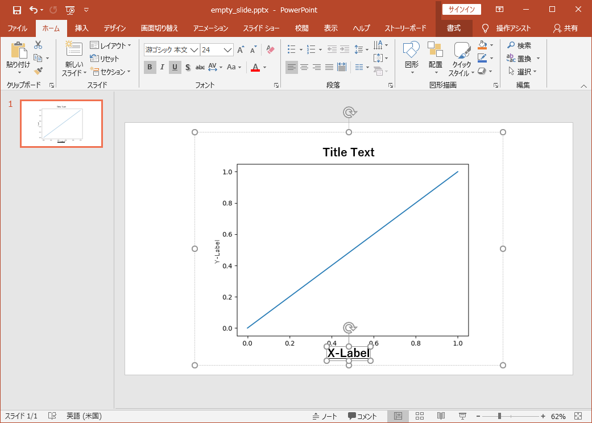

Getting Started
Introduction
I'd like to introduce basic usage of figpptx in this page.
If you learn how to use rasterize and send function, then
it is all right for 80% of use cases.
In this short tutorial, these two functions are explained.
rasterize function
This section explains how to send Figure of matplotlib as an image.
Step 1. Prepare a slide.
Firstly, please prepare PowerPoint Slide as below.

Step 2. Plot a Figure and rasterize.
A rasterized figure is transferred to a slide with the below code. Please execute it.
import matplotlib.pyplot as plt import figpptx fig, ax = plt.subplots() ax.plot([0, 1], [1, 0], label="Line") figpptx.rasterize(fig)
The result.

Tip
With Alt+Tab key, the active window changes.
This shortcut is useful to switch between PowerPoint
and application for python codes such as Vim, VSCode, Pycharm, and Jupyter Notebook.
send function
rasterize function is sufficient if what you want is an image.
However, sometimes, you would like to edit details of figure
when making presentation.
This section explains send function.
Please use send function, if you want to modify label-texts of your figure.
Step 1. Prepare a slide.
Firstly, please prepare PowerPoint Slide as the previous section.
Step 2. Plot a Figure and send.
Please execute the below code.
import matplotlib.pyplot as plt import figpptx fig, ax = plt.subplots() ax.plot([0, 1], [0, 1], label="Line") ax.set_xlabel("X-Label", fontsize=14) ax.set_ylabel("Y-Label", fontsize=14) ax.set_title("Title Text", fontsize=18) figpptx.send(fig)
The result.

Since texts of titles and labels are PowerPoint Objects, you can edit them.

Conclusion
This tutorial describes.
-
How to use
rasterizefunction.- Transfer a Figure as an image.
-
How to use
sendfunction.- Some texts are PowerPoint Objects.
- possible to modify them.
If you need customizations of procedures, or have interests in internal mechanism, please read the advanced tutorials and code themselves.